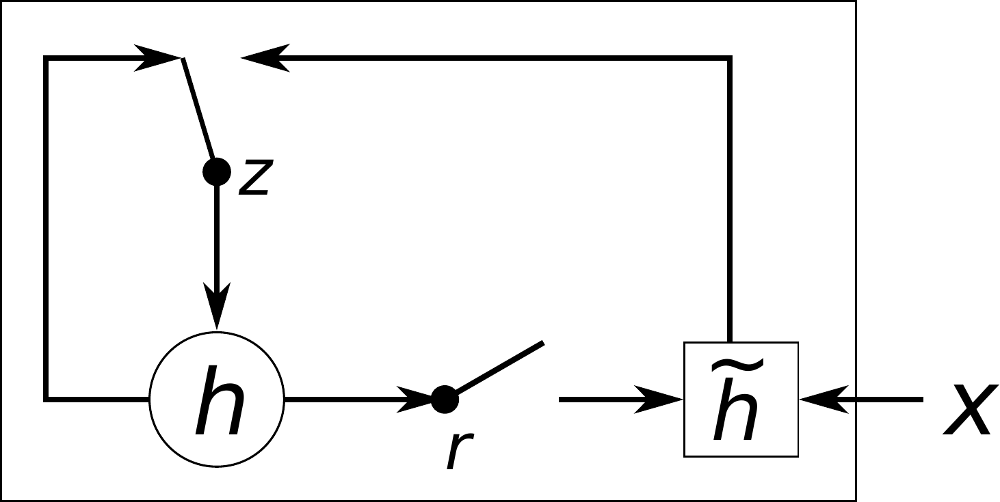

A gate is a small layer ending in a sigmoid (from Logistic Regression), so its output, between 0 and 1, scales how much old memory survives and how much new input enters. With a gate near keep, memory and gradient pass through a step unchanged, which the plain RNN cannot do.
The plain cell runs the same two lines at every step:
One RNN step mixes the new word with the last memory, then squashes it.
at = W·xt + U·ht−1
The mix. xt is the word entering and ht−1 the memory from the last cell; W and U are learned weights that scale each, and · means times. A learned bias also joins the mix, left off this line. at is the mix before squashing.
ht = tanh(at)
The squash. tanh squeezes the mix to between −1 and 1, and ht, the new hidden state, carries both forward. The same W and U are reused at every step, which is why one RNN handles a sentence of any length.
Backpropagating through many such steps multiplies the gradient by one factor per step, so it fades over a few dozen steps (Why gradients vanish or explode, in RNN Basics: Recurrence and Backpropagation Through Time).
The GRU introduces gates to control what information to keep and what to forget.
Take "Ramin wrote the best tutorial, he did it again!". A vanilla RNN might overwrite "Ramin" and forget who "he" was; a GRU's update gate can say "don't overwrite Ramin, hold on to that memory." A language model meets this all the time: to predict the next words it must link "he" back to a name many tokens earlier.
When the update gate keeps the old memory, the hidden state is copied straight to the next step: no multiplication, no tanh, an identity connection. Gradients flow back along that same path unchanged, which is how the GRU beats vanishing gradients.
1.1 Gates decide what to keep and what to forget
There are 2 gates, both little feedforward networks with a sigmoid activation, so their outputs are between 0 and 1.
The update gate asks "Keep the old hidden state or update it?"
0 means keep the old memory, 1 means overwrite it with new memory.
The reset gate asks "When computing new candidate memory, how much of the old memory should I ignore?"
The candidate hidden state is a proposal for new memory. With the reset gate at zero, the candidate ignores past memory and depends only on the input.
The update is a weighted average of the old memory and the candidate, and the network learns the gate setting from data, per step, per neuron. Figure 1 draws this as dataflow.
Figure 1.The GRU update. Its gate mixes old memory and candidate.
First the two gates decide how much to keep and how much old memory the candidate may see.
zt = σ(Wz·[xt, ht−1])
The update gate sets how much of the new candidate to let in versus keeping the old memory. xt is the input and ht−1 the old memory; the brackets stack them into one vector, so Wz·[xt, ht−1] is the RNN line's W·xt + U·ht−1 written as one matrix on the stacked vector; each gate has its own pair. σ, the sigmoid, squashes the result to between 0 and 1. Each line also adds a learned bias, left off here.
rt = σ(Wr·[xt, ht−1])
The reset gate sets how much of the old memory the candidate gets to see. It is built the same way from the input and the old memory, squashed to between 0 and 1.
Then the filtered memory, the candidate, and the blend that decides what survives.
mt = rt ⊙ ht−1
The reset gate filters the old memory first, and mt is the part of the memory the candidate gets to see. ⊙ multiplies element by element (matching entries one by one).
h̃t = tanh(Wh·[xt, mt])
The candidate is the new word mixed with the filtered memory, squashed by tanh to between −1 and 1. It is only a proposal; the next line decides what survives.
ht = (1−zt)·ht−1 + zt·h̃t
In the blend, ht adds the old memory scaled by (1 − zt), the keep share, to the candidate scaled by zt, the replace share. zt = 0 keeps everything, zt = 1 replaces everything: the update gate is the blend knob.
1.2 One GRU step, in code
The whole cell is the five card lines above, as one function: each nn.Linear holds one W and its bias, torch.cat builds the stacked vector, and the names match the cards:
import torch
from torch import nn
# input and hidden sizes
d_in, d_h = 8, 16
d = d_in + d_h
W_z = nn.Linear(d, d_h)
W_r = nn.Linear(d, d_h)
W_h = nn.Linear(d, d_h)
def gru_step(x_t, h):
# h is h_t-1: (batch, d_h)
xh = torch.cat([x_t, h], -1)
z = W_z(xh).sigmoid()
r = W_r(xh).sigmoid()
m = r * h
xm = torch.cat([x_t, m], -1)
h_tilde = W_h(xm).tanh()
keep = (1 - z) * h
return keep + z * h_tilde
1Builds one weight matrix with its bias for each of Wz, Wr and Wh, each reading the stacked vector.
2Stacks input and memory and computes the two gates, the first card.
3Filters the memory, builds the candidate and blends: keep is the old memory times the keep share (1 − z), the second card.
The GRU has no separate cell state (a memory stream beside the hidden state); the update gate's identity path is enough to preserve long-term memory.
This is the paper that introduced the GRU (Cho et al., EMNLP 2014). Figure 2 is the paper's Figure 2, its real hidden-unit diagram, with an excerpt of its original caption.

Figure 2. "An illustration of the proposed hidden activation function. …" (Cho et al., 2014)
That paper and PyTorch put z on the old state; this page follows Chung et al. (2014), which puts z on the candidate. PyTorch's nn.GRU also applies the reset after the matrix rather than before it; the same paper found the two forms perform alike.
Gate shut keeps the old memory
zt = 0: the old memory survives unchanged.
Gate open replaces it
zt = 1: the candidate overwrites the old memory.
Halfway blends the two
zt = 0.5: part old memory, part candidate.
The reset gate filters what the candidate sees
reset gate open
reset gate shut
With the reset shut, the candidate sees only the input.
Figure 3. The GRU blend, step by step.
Only the gates move in this illustration; a real GRU also learns its weights.
The GRU lines this step uses.
zt = σ(Wz·[xt, ht−1])
As in the card above, one gate decides how much old memory survives each step.
rt = σ(Wr·[xt, ht−1])
As in the card above, the reset gate filters what the candidate sees.
mt = rt ⊙ ht−1
The filtered memory, the teal stream from the reset gate into the candidate.
h̃t = tanh(Wh·[xt, mt])
The candidate mixes the input with the filtered memory.
ht = (1−zt)·ht−1 + zt·h̃t
In the blend, shut keeps the old memory whole, open replaces it, and halfway blends.
zt the update gatert the reset gatemt the filtered memoryht−1 the old memory; ht the new memoryh̃t the candidatext the input
2 Long Short-Term Memory (LSTM)
LSTM (Long Short-Term Memory) separates memory into two parts and uses three gates to carefully control what flows into, out of, and stays within these memories.
The cell stateC is the memory tank: it runs through the cell with no squashing nonlinearity, so information and gradients ride it across hundreds of steps. The hidden stateh is the short-term read, filtered from the tank for this step.
Three gates guard the tank, and each one is a question the network asks every step:
The forget gate asks "Do I still need this?" It looks at the old level and drains what stopped mattering.
The input gate asks "Is this worth writing down?" It decides how much of the new candidate actually gets poured into the tank.
The output gate asks "What do I show right now?" It filters the tank's level down into the hidden state.
Figure 4.The cell-state highway. Gradients ride it back unsquashed.
2.1 The LSTM update
The forget gate scales yesterday's level, the input gate scales today's pour (the candidate), and they add. The cell state is only ever scaled and added, never squashed, which is why gradients walk straight back down the highway. The output gate then picks how much of the squashed level to show as h. Each gate is a sigmoid of the input and the previous hidden state. Figure 5 draws this as dataflow.
Figure 5.The LSTM cell update. Scaled and added, never squashed.
Take an always-listening device: once it hears the wake word, the cell must hold "wake word heard" across many quiet audio frames until the command arrives.
First the two gates that guard the cell forget the stale and let in the fresh.
ft = σ(Wf·[xt, ht−1])
The forget gate sets how much of the old cell state to keep versus drain away. As in the GRU, Wf·[xt, ht−1] is one matrix on the input and the last hidden state stacked into one vector, and σ squashes it to between 0 and 1. Each line also adds a learned bias, left off here.
it = σ(Wi·[xt, ht−1])
The input gate sets how much of the new candidate to pour into the cell and is built the same way.
Next come the candidate and the cell update itself, where the two streams merge.
C̃t = tanh(Wc·[xt, ht−1])
The candidate cell is fresh information mixed from the word and the last hidden state, squashed by tanh to between −1 and 1. It is what could be added; the input gate decides how much enters.
Ct = ft ⊙ Ct−1 + it ⊙ C̃t
The cell update keeps what the forget gate saved and adds what the input gate let in; ⊙ multiplies element by element, and Ct−1 is the cell state's previous value. This line has no squash, so the cell state is only scaled and added, which is why it is a gradient highway.
Last the output gate and the filtered read it reveals.
ot = σ(Wo·[xt, ht−1])
The output gate sets how much of the cell state to reveal as the hidden state and is built the same way as the other gates.
ht = ot ⊙ tanh(Ct)
The new hidden state is the cell squashed by tanh, then filtered by the output gate. The cell itself stays private memory; only this filtered read reaches the next step and the output.
Why does the gradient survive on the cell line? Why gradients vanish or explode (in RNN Basics: Recurrence and Backpropagation Through Time) showed that every step back multiplies the gradient by one factor. Put the plain RNN's factor next to the gated ones:
One step back, the plain RNN multiplies the gradient by a squashed slope times U; the LSTM cell line multiplies it by the forget gate alone, and the GRU keep path by one minus its update gate.
∂hk∂hk−1 = tanh′(ak) · U
The plain RNN's factor, from the last line of the BPTT card in RNN Basics. The tanh slope is at most 1, so unless U is large every step back shrinks the gradient: at a factor of 0.9, step 1 of a 28-step sentence gets about 6% of it.
∂Ct∂Ct−1 = ft
In the cell update line above, the old cell state Ct−1 appears once, multiplied by the forget gate, so nudging it moves Ct by exactly ft, element by element. No tanh slope and no U sit on this path. This is the direct path along the tank's line; the gates also read ht−1, which adds side paths left off here.
∂CT∂C1 = ∏k=2..Tfk
Chained over T steps it is again one long product, as in BPTT, but now each factor is a gate the network sets. Held near 1 while the memory matters, the product stays near 1: with the forget gate at 0.99, step 1 of a 28-step sentence still gets about 76% of the gradient, against about 6% for the plain RNN (illustrative numbers).
∂ht∂ht−1 = 1 − zt
The GRU's blend line gives the same kind of factor on its keep path: the old memory enters multiplied by one minus the update gate, so with zt = 0 this factor is exactly 1 and the gradient passes the step unchanged. Like the LSTM line, it is the direct path only; zt and the candidate also read ht−1, which adds side paths left off here.
The input gate pours in
input gate shut
input gate open
With the input gate open, the level rises.
Forget gate open, input and output shut, so the level holds
With only the forget gate open, the level stays put: the memory carries over.
The forget gate shuts and the level drains
As the forget gate shuts, the old level stops carrying over for good.
The output gate reveals a filtered read
output gate shut
output gate open
With the output gate open, a filtered read of the cell flows out.
Figure 6. The LSTM memory tank; its level is the memory.
Only the gates move in this illustration; a real LSTM also learns its weights.
The LSTM lines this step uses.
ft = σ(Wf·[xt, ht−1])
As in the card above. In the tank, the forget gate decides how much of the level stays.
it = σ(Wi·[xt, ht−1])
As in the card above. In the tank, the input gate fills it.
C̃t = tanh(Wc·[xt, ht−1])
The candidate, what could be poured in.
Ct = ft ⊙ Ct−1+ it ⊙ C̃t
The cell update is scaled and added, never squashed.
ot = σ(Wo·[xt, ht−1])
The output gate sets how much of the cell is read out.
ht = ot ⊙ tanh(Ct)
The filtered read that leaves the cell.
ft the forget gateit the input gateot the output gateCt the cell state (Ct−1 its previous value)ht the outputht−1 the last hidden stateC̃t the candidatext the input
Back on the always-listening device, the cell should keep the wake word, not the louder door slam that comes three steps later. Here the forget gate stays open, and the pour sizes are illustrative.
Figure 7. The input gate alone decides what enters the tank.
2.2 The forget gate was added later
This is the paper that started all of this (Hochreiter and Schmidhuber, 1997): a memory cell with a self-loop of weight exactly 1.0, so the error can cycle forever without shrinking, plus gates that open and close access to it. Figure 8 is the paper's Figure 1, its real memory-cell architecture, with an excerpt of its original caption.
There is no forget gate in this figure. The 1997 LSTM had only input and output gates; the forget gate arrived three years later, from Gers et al. ("Learning to Forget," 2000). The LSTM on this page is the post-2000 version.
3 Long sequences expose the vanilla RNN
How long does each cell hold one event? Figure 9 feeds the same single spike to a plain RNN, a GRU and an LSTM. The cost line under each lane counts the weights of one scalar cell of that kind, three per block (input weight, memory weight, bias): one block for the plain RNN, three for the GRU (update gate, reset gate, candidate) and four for the LSTM (three gates and the candidate). Each weight costs about one multiply and one add per step, and 1×, 3× and 4× give the cost per step next to the plain RNN's.
Figure 9. After one spike, the RNN's echo fades and the gated lanes hold it.
Illustrative weights. The cost lines count weights and operations, not timings.
In the field, bidirectional LSTMs, one reading forward and one backward, transcribe speech when trained with the CTC loss.
In practice you never write these cells by hand. PyTorch has them built in:
from torch import nn
# x: (batch, seq, feat)
lstm = nn.LSTM(
input_size=28,
hidden_size=128,
num_layers=2,
batch_first=True)
# output: every step, last layer
# hn, cn: final states per layer
output, (hn, cn) = lstm(x)
# GRU: same, no cell state
# output, hn = gru(x)
1Builds a two-layer LSTM for inputs of 28 features with 128 hidden units.
2Runs the sequence and returns every step of the last layer plus the final hidden state hn and cell state cn of each layer.
3The GRU call is the same with no cell state.
GRUs typically achieve similar results to LSTMs with fewer parameters: no separate cell state, two gates instead of three. If you are not sure which to pick, start with a GRU.
4 Training problems and fixes
Don't draw a fresh dropout mask at every timestep inside the recurrence.Dropout (in Regularization and Data Augmentation) randomly zeroes activations during training, and a new mask at every step keeps cutting the memory the cell carries forward. Apply it between stacked layers, as the dropout argument of PyTorch's nn.LSTM and nn.GRU does, or share one mask across all timesteps, which is variational dropout (Gal and Ghahramani, 2016).
Detaching only h breaks truncated BPTT for an LSTM. The cell state C still links back to the previous chunk, whose graph that chunk's loss.backward() already freed, so the next backward raises PyTorch's "Trying to backward through the graph a second time" error. Detach the whole (h, c) state between chunks. retain_graph=True does not help: the loop in RNN Basics: Recurrence and Backpropagation Through Time steps the optimizer after each chunk, so the next backward fails with an in-place modification error, and without those steps the graph, memory and time grow.
When do RNNs still make sense? Transformers won the long-sequence game because attention sees everything at once. RNNs are still the right call for streaming data where you must decide now with constant memory: real-time sensor streams, on-device keyword spotting, low-latency control.
Gating fixed the memory problem, but RNNs still read one step at a time, which makes training slow on long sequences. The next idea drops recurrence entirely: let every position look directly at every other position. That is Transformers.
5 References
Cho et al. (2014). Learning Phrase Representations using RNN Encoder-Decoder for Statistical Machine Translation. EMNLP. arXiv:1406.1078.
Hochreiter & Schmidhuber (1997). Long Short-Term Memory. Neural Computation 9(8).
Gers et al. (2000). Learning to Forget: Continual Prediction with LSTM. Neural Computation 12(10).
Chung, Gulcehre, Cho, Bengio (2014). Empirical Evaluation of Gated Recurrent Neural Networks on Sequence Modeling. arXiv:1412.3555.
Gal & Ghahramani (2016). A Theoretically Grounded Application of Dropout in Recurrent Neural Networks. NeurIPS. arXiv:1512.05287.